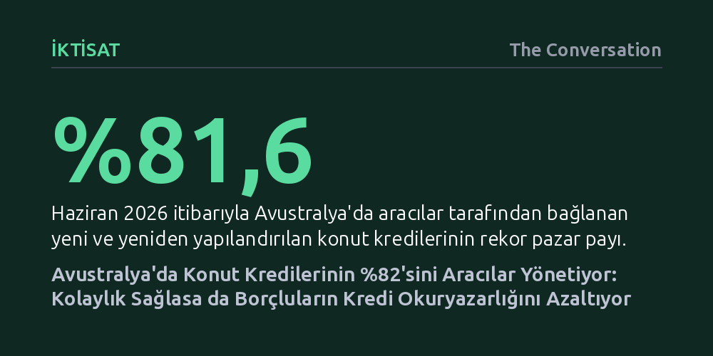

IKTISAT · The Conversation · 2026-10-12
Avustralya'da yeni konut kredilerinin yüzde 82'si aracılar eliyle alınırken, bu durum borçluların sürece dair finansal okuryazarlığını zayıflatıyor. Aracılar borçlulara güven verse de, kredi tutarı ve vadesine bağlı komisyon teşvikleri tüketiciler açısından maliyet ve bilgi açığı yaratıyor.
Bir finansal aracıya başvurmanın süreci kolaylaştırdığı hissi yaratsa bile, uzun vadede tüketicinin konut kredisi piyasasındaki kavrayışını ve pazarlık gücünü köreltebileceğini gösteriyor.

Avustralya konut piyasasında borçlanma alışkanlıkları son on yılda köklü bir dönüşüm geçirdi. Haziran 2016'da konut kredilerinin yalnızca yarısı aracılar vasıtasıyla temin edilirken, 2026 ortası itibarıyla bu pay rekor kırarak yüzde 81,6'ya ulaştı. Yalnızca 2025 yılında 838 binden fazla konut kredisi aracıların elinden geçti. Bu oranla Avustralya; İngiltere ve Hollanda ile birlikte ipotekli konut kredisi pazarında aracı ağırlığının yüzde 80'i aştığı dünyadaki üç ülkeden biri konumuna geldi.
Bu kitlesel yönelişin arkasında hem bankacılık yapısındaki fiziksel daralma hem de makroekonomik dalgalanmalar yatıyor. 2017 ile 2023 yılları arasında ülke genelinde 2.100'den fazla banka şubesinin kapatılması, yüz yüze bankacılığı metropollerde yaklaşık yüzde 40, kırsal bölgelerde ise yüzde 35 oranında tırpanladı. Tüketiciler doğrudan bir kredi yetkilisiyle yüz yüze görüşme imkânını kaybettikçe alternatif kanallara itildi.
Eş zamanlı olarak faiz oranlarının sergilediği dalgalı seyir, ev sahiplerini yoğun bir arayışa soktu. Pandemi dönemindeki tarihi dip seviyelerin ardından hızla tırmanan ve yüzde 4,6 ile son on beş yılın zirvesine çıkan gösterge faizler, borçlular üzerindeki geri ödeme baskısını katladı. İki katına çıkan ortalama kredi tutarları karşısında en uygun teklifi bulma telaşı, bireyleri profesyonel destek aramaya sevk etti.
Üç binden fazla Avustralyalı ile yürütülen kapsamlı araştırmalar, aracı kullanan borçluların psikolojisinde çarpıcı bir paradoksu açığa çıkarıyor. Parramatta'daki bir odak grupta yer alan bir ev alıcısının belirttiği gibi: "Konut kredileri kafa karıştırıcı, bu yüzden aracı kullanıyorum." Bankaların katı, pahalı ve karmaşık bulunan bürokrasisi karşısında aracı bir kurtarıcı gibi algılanıyor.
Araştırma bulgularına göre, kredisini bir aracı üzerinden bağlayan tüketiciler, doğrudan bankaya başvuranlara kıyasla en doğru seçeneği bulduklarına çok daha kuvvetle inanıyor. Ne var ki bu özgüven gerçeği yansıtmıyor. Aracı kullanan kişilerin konut kredisi sözleşmelerinin işleyişi, maliyet bileşenleri ve alternatif yapıları hakkındaki gerçek bilgi düzeyinin, bankayla doğrudan muhatap olanlara kıyasla belirgin şekilde daha düşük olduğu görülüyor.
Bu durum, aracılık hizmetlerinin görünmeyen bir toplumsal maliyetini ortaya koyuyor. On yıllar boyunca geri ödenecek devasa bir finansal yükümlülüğün karar mekanizması dışarıya devredildikçe, bireylerin temel finansal okuryazarlığı geriliyor. Borçlular neyi neden seçtiklerini tam olarak kavramadan kendilerine sunulan paketleri onaylama eğilimine giriyor.
Tüketicilerin çoğu, bir aracıya başvurduklarında piyasadaki tüm seçeneklerin tarafsızca tarandığını varsayar. Oysa uygulamada aracılar ülkedeki yüzü aşkın kredi sağlayıcısının tamamını karşılaştırmaz. Bunun yerine toplayıcı adı verilen toptancı platformların sunduğu portföylerle çalışırlar. Bir aracının önündeki panelde ortalama 23 farklı kuruluşun ürünleri yer alır ve seçenekler bu listeyle sınırlı kalır.
Sistemin gelir modeli de borçlunun aleyhine işleyebilecek örtük teşvikler barındırır. Aracılar hizmet ücretini müşteriden değil, krediyi veren kuruluştan komisyon olarak alır. Bu ödeme hem dosya kapandığında peşin ödenen bir tutardan hem de borcun bakiyesi üzerinden yıllık yaklaşık yüzde 0,15 oranında devam eden düzenli bir paydan oluşur.
Matematik basittir: Kredi tutarı ne kadar büyük ve vadesi ne kadar uzun olursa, aracının elde edeceği gelir o denli artar. Bu mekanizma, aracıları daha yüksek tutarlı ve daha uzun vadeli borçlanma ürünlerine yönlendirme riski taşır. Müşteri memnuniyeti ve tavsiye mekanizması bu eğilimi bir nebze dizginlese de yapısal çıkar çatışması varlığını korur.
Düzenleyici otoriteler 2021 yılından bu yana aracılara yalnızca uygun ürün bulma değil, müşterinin en iyi çıkarını gözetme yasal yükümlülüğü getirmiştir. Bu kural uyarınca aracının farklı seçenekleri karşılaştırmalı gerekçeleriyle anlatması şart koşulsa da sahadaki veriler bu eğitici boyutun her zaman eksiksiz işlemediğini gösteriyor.
Günümüzde azalan kredi talebi nedeniyle finans kuruluşları arasında kıyasıya bir rekabet yaşanıyor. Kimi büyük bankalar, aracı komisyonlarından tasarruf etmek amacıyla doğrudan kendi şube veya dijital kanallarından gelen müşterilere daha cazip koşullar sunmaya çalışıyor. Düzenli gelire, kusursuz kredi geçmişine ve düşük borç yüküne sahip profiller için doğrudan başvuru yapmak hem maliyeti düşürebilir hem de kontrolü elde tutmayı sağlar.
Buna karşılık gelir akışı düzensiz olan serbest çalışanlar veya standart bankacılık puanlamasında sınırda kalan borçlular için aracılar hâlâ kritik bir köprü işlevi görebilir. Önemli olan, aracıyı tüm süreci körü körüne teslim ettiğimiz bir vekil değil, arka plandaki komisyon yapısını ve portföy kısıtlarını sorgulayarak yöneteceğimiz bir teknik danışman olarak konumlandırabilmektir.